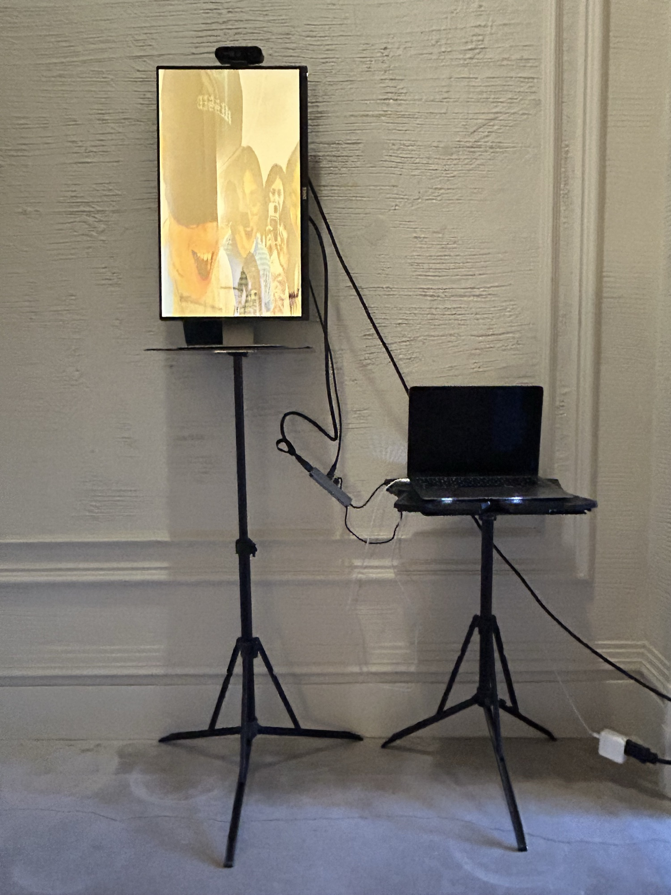

Memories on the Wall

A monitor functions as a mirror, showing viewers a live video feed of themselves. Unlike a conventional mirror, it retains what passes in front of it: just before a viewer leaves the frame, the system captures a snapshot, which is added to an accumulating archive and periodically overlaid back onto the live feed — a palimpsest of present and past viewers. The system also records a one-second sample of ambient sound on each detection, processed through a granular synthesizer and looped until the next viewer arrives. Mirror and microphone become archive and surveillance apparatus, retaining impressions of everyone who has stood in front of them.
Exhibited at CCRMA, as part of the Intermedia Workshop Research Group's Final Project Showcase.
video documentation